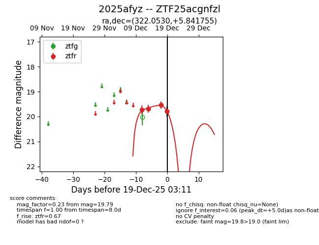
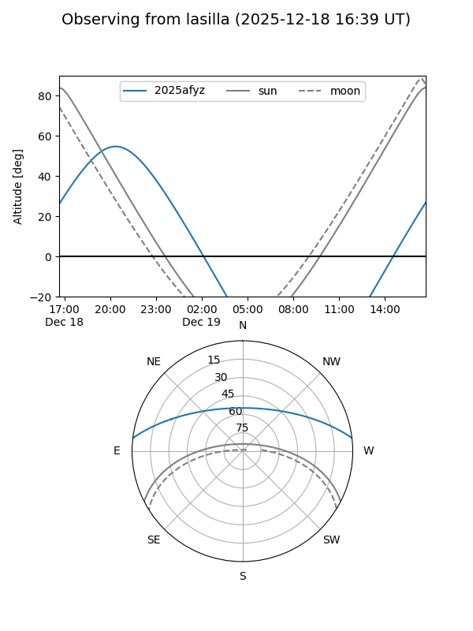
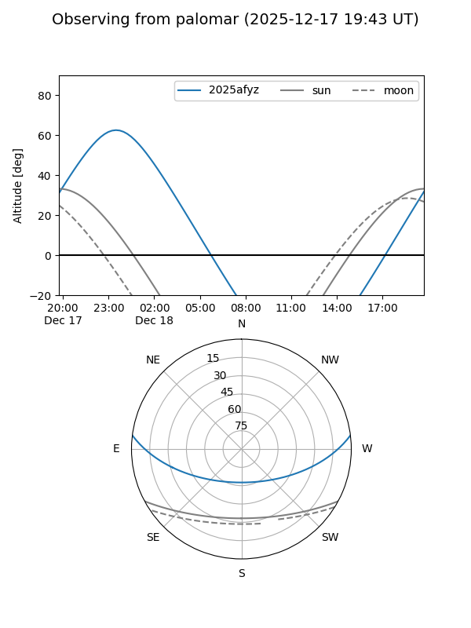

2025afyz
Target 2025afyz at 2025-12-18 11:18
Aliases and brokers:
FINK: fink-portal.org/ZTF25acgnfzl
Lasair: lasair-ztf.lsst.ac.uk/objects/ZTF25acgnfzl
ALeRCE: alerce.online/object/ZTF25acgnfzl
TNS: wis-tns.org/object/2025afyz
YSE: ziggy.ucolick.org/yse/transient_detail/2025afyz
alt names
ZTF25acgnfzl (ztf,fink_ztf)
2025afyz (tns,yse)
Coordinates:
equatorial (ra, dec) = 322.0530,+5.84175
equatorial (HMS+DMS) = 21:28:12.72,+05:50:30.32
galactic (l, b) = (59.0042,-30.86982)
Photometry
last ztfr=19.54
3 ztfr detections
Lightcurve

Visibility


Additional plots